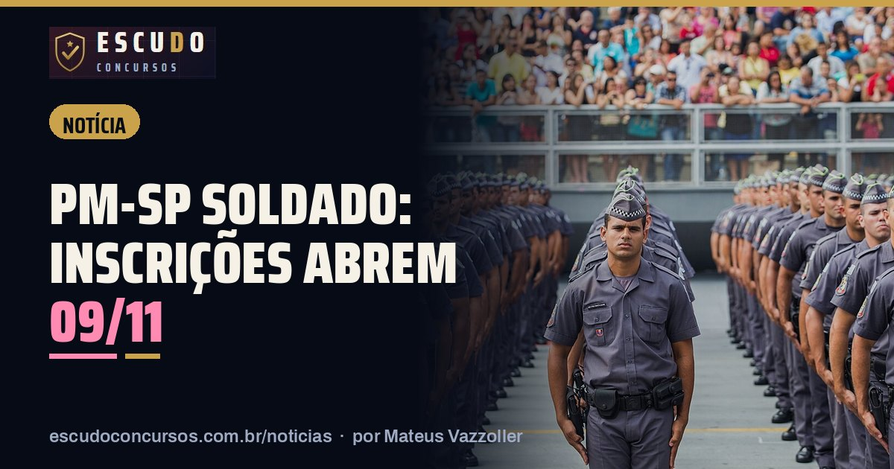

PM-SP Soldado 2026: inscrições abrem 09/11 e o prazo da isenção é só até 11/11
NotíciaPublicado em 8 de novembro de 2026 · por Mateus Vazzoller, ESCUDO Concursos

As inscrições do concurso da Polícia Militar do Estado de São Paulo para Aluno-Soldado PM abrem às 10h de segunda-feira, 09/11/2026, e vão até as 23h59 de 22/12/2026, só pelo site da Fundação VUNESP. São 2.000 cargos, com remuneração básica inicial de R$ 5.482,51, segundo o Edital nº DP-4/321/26.
| Cargo | Aluno-Soldado PM (Quadro de Praças) |
|---|---|
| Vagas | 2.000 |
| Salário inicial | R$ 5.482,51 |
| Banca | Fundação VUNESP |
| Escolaridade | Ensino médio (exigido na posse) |
| Inscrições | 09/11 a 22/12/2026, em www.vunesp.com.br |
| Isenção ou redução da taxa | 09/11 a 11/11/2026 |
| Taxa | R$ 110,00 |
| Prova (prevista) | 28/02/2027, à tarde |
O prazo que vence primeiro é o da isenção
O pedido de isenção ou redução da taxa tem janela de apenas três dias: das 14h de 09/11 às 23h59 de 11/11/2026. O edital prevê:
- isenção total para doador de sangue, com no mínimo 3 doações nos últimos 12 meses;
- redução de 50% para estudante com renda inferior a 2 salários mínimos ou desempregado.
Quem perder essa janela paga a taxa cheia de R$ 110,00. O pagamento vai até o primeiro dia útil seguinte ao fim das inscrições.
Quem pode se inscrever
O edital pede, na inscrição, nacionalidade brasileira, idade entre 17 e 30 anos (contada no período de inscrição), estatura mínima de 160 cm para homens e 155 cm para mulheres e o pagamento da taxa. Ensino médio completo, CNH de categoria B a E e os demais requisitos são exigidos só na posse.
Escolha do local de prova
Na ficha de inscrição o candidato escolhe a cidade da prova entre 51 municípios do estado. O edital não permite trocar depois, então vale conferir a opção antes de finalizar. Na mesma ficha é feito o pedido de pontuação diferenciada para candidatos pretos, pardos e indígenas, prevista na Lei Complementar nº 1.259/2015.
Datas principais
| Etapa | Data |
|---|---|
| Pedido de isenção ou redução da taxa | 09/11 (14h) a 11/11/2026 (23h59) |
| Inscrições | 09/11 (10h) a 22/12/2026 (23h59) |
| Convocação para a prova (acompanhar) | 15 a 19/02/2027 |
| Prova objetiva e redação (prevista) | 28/02/2027, à tarde |
A prova tem 60 questões de cinco alternativas e uma redação de até 30 linhas, em 5 horas. O que cai em cada matéria está no guia do concurso.
Curso ESCUDO Soldado da Polícia Militar de São Paulo em PDF: 75 capítulos e 345 questões, de acordo com o edital aberto, 2 simulados de 60 questões. De R$ 47 por R$ 37 com o cupom PMESP37 até 22/12/2026.
Ver o curso
Perguntas frequentes
Quando abrem as inscrições da PM-SP para Soldado?
Às 10h de 09/11/2026, só pelo site da Fundação VUNESP. O prazo vai até as 23h59 de 22/12/2026.
Até quando posso pedir isenção da taxa?
O pedido de isenção ou de redução de 50% vai das 14h de 09/11 às 23h59 de 11/11/2026. Depois disso, a taxa é de R$ 110,00.
Posso trocar a cidade da prova depois?
Não. O edital diz que a cidade escolhida na ficha de inscrição, entre 51 municípios, não pode ser alterada depois.
Leia também
- NotíciaGM São Gonçalo: inscrições terminam quarta-feira, 18/11, e o boleto vence no dia seguinte
13 de novembro de 2026 · Concurso Guarda Municipal de São Gonçalo/RJ: inscrições no SELECON terminam em 18/11/2026, boleto de R$ 95,18 até 19/11. 100 vagas e prova em 24/01/2027.
- NotíciaPM-SC Soldado: inscrições terminam segunda-feira, 16/11, e a idade máxima conta nesse dia
12 de novembro de 2026 · Concurso PM-SC Soldado: inscrições no Instituto AOCP terminam em 16/11/2026. Quem completa 30 anos até essa data fica de fora. Taxa de R$ 200,00 e prova em 13/12.
- NotíciaContagem/MG Assistente Administrativo: inscrições terminam terça-feira, 17/11, às 16h
12 de novembro de 2026 · Concurso Prefeitura de Contagem/MG: inscrições para Assistente Administrativo vão até 17/11/2026, às 16h, no IBGP. Boleto de R$ 70,00 pago até 18/11.
Guia completo do concurso: edital, vagas e o que cai · Mais notícias e dicas de concursos